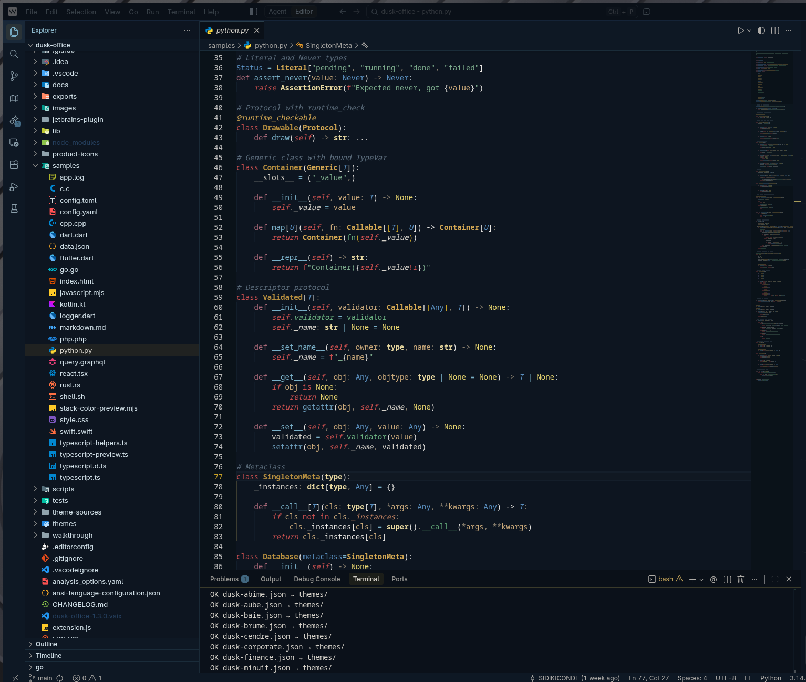

One coherent family
27 variants share the same chrome philosophy and accent grammar. Switch between them and your workbench feels related, not random.
A polished theme suite for VS Code, Cursor and Windsurf — tuned for finance, audit, banking, fintech, SOC monitoring, DevOps, and the kind of long coding sessions where readability is everything.

27 variants share the same chrome philosophy and accent grammar. Switch between them and your workbench feels related, not random.
On first open, Dusk detects your project (fintech, audit, cybersec, ML, modern web…) from package.json, Cargo.toml, go.mod and suggests the matching variant. Local-only.
Every theme passes 4.5:1 on terminal foreground, 2.9:1 on ANSI colors, and was audited against 25 critical UI pairs. A CI script fails if anyone regresses contrast.
Switch theme automatically from the active editor language and time of day — e.g. Python → Ivory by day and Abyss by night, TypeScript → Nebula at night, with a late-night Midnight comfort mode.
Browsing variants applies them in real time: arrow up/down to preview, Enter to confirm, Escape to revert. No more committing 27 themes one by one.
No telemetry, no companion installs, no network calls, no surprise mutations. Reset everything with one command. Fork it, study it, contribute back.
Hover for the niche. Click any name to copy the variant identifier.
Open a project. Dusk Office reads the top-level manifests and offers a one-time suggestion of the variant tuned for that context. All local, no telemetry, opt-out via setting.
stripe, plaid, dwolla, payment / wallet keywords →
Suggests Vault
quickbooks, xero, audit / SOX / GAAP / IFRS →
Suggests Audit
helmet, jsonwebtoken, vault, falco, *.tf →
Suggests Sentinel
numpy, pandas, fastapi, django, Jupyter →
Suggests Steward
next, astro, vite, bun.lockb, deno.json →
Suggests Voltage
react, vue, svelte, tailwindcss, Storybook →
Suggests Nocturne
Go, Rust+clap, Terraform, Makefile, Dockerfile →
Suggests Terminal
Ctrl/Cmd + Shift + X)Dusk OfficeCtrl/Cmd + K then Ctrl/Cmd + TDusk OfficeDusk Office ThemesWorks in IntelliJ IDEA, PyCharm, WebStorm, PhpStorm, GoLand, CLion, Rider, RubyMine, DataGrip, Android Studio, RustRover.
git clone https://github.com/SIDIKICONDE/dusk-officenpm installmake install-vsix EDITOR=code